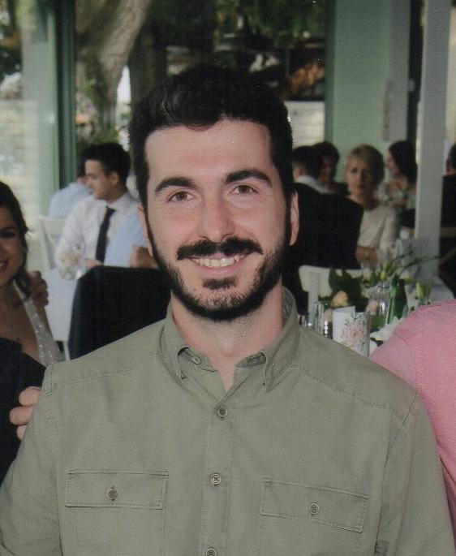

Dr Relja Arandjelović (Др Реља Аранђеловић)

I am a Staff Research Scientist at DeepMind.
Previously I was a Postdoctoral research assistant at the WILLOW group (INRIA / École Normale Superiéure), working with Josef Sivic,
and a Postdoctoral research assistant at the
Visual Geometry Group, Department of Engineering Science, University of Oxford, working with Prof. Andrew Zisserman. I obtained a PhD in Engineering from the same group in 2013. Before coming to Oxford I studied at Cambridge where I got my BA and MEng degrees.
News 
-
10 Jun 2021
New paper on arXiv:
NeRF in detail: Learning to sample for view synthesis -
19 May 2021
Outstanding Reviewer award at the CVPR 2021 -
01 Feb 2021
Co-organizing the CVPR 2021 tutorial Leave those nets alone: Advances in self-supervised learning. -
08 Dec 2020
Code (JAX) released for the linear evaluation of our pre-trained models from the NeurIPS 2020 paper Self-Supervised MultiModal Versatile Networks -
22 Oct 2020
Models released for our NeurIPS 2020 paper Self-Supervised MultiModal Versatile Networks:
S3D-G, TSM-50, TSM-50x2 -
22 Oct 2020
Top 10% reviewer at the NeurIPS 2020 -
25 Sep 2020
Paper accepted to NeurIPS 2020:
Self-Supervised MultiModal Versatile Networks -
14 Aug 2020
Paper accepted to TPAMI:
NCNet: Neighbourhood Consensus Networks for Estimating Image Correspondences -
10 Jul 2020
Outstanding Reviewer award at the ECCV 2020 -
02 Jul 2020
Paper accepted to ECCV 2020:
Efficient Neighbourhood Consensus Networks via Submanifold Sparse Convolutions